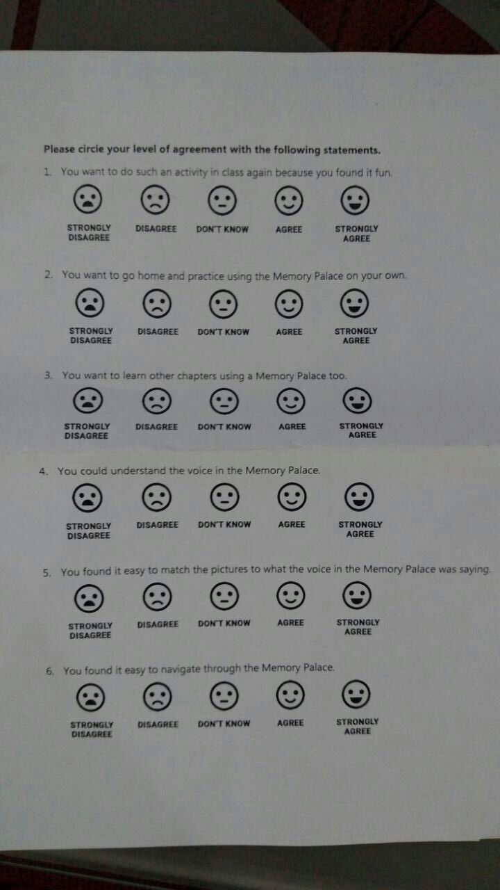

MemoryPal
The class was following a theme of “Social development” for all projects.
I had read Joshua Foer’s “Moonwalking with Einstein” over the summer. In it, he talks about the effectiveness of mnemonic devices and how the art of memory needs to be taught to students. The book inspired me to do an independent study with Prof. Yasser Hashmi about memory and cognition so, when this project came up, I knew exactly what I wanted to do.
When: January 2017 - May 2017
Where: Lahore University of Management Sciences (LUMS)
For: Class titled “Topics in Interactive Computing”, taught by Dr. Suleman Shahid
Motivation:
Memorization of facts and events is key to succeeding in the Pakistani educational setup. Children, however, aren’t usually taught how to memorize and learn. This leaves children resorting to the use of flashcards or rote repetition for “learning”. Through this project we created MemoryPal, a desktop application designed to introduce children to memory techniques aiming to make their learning process more interactive and fun.
Process:
1. I led a group of two and began work on the project with a vast literature review. We thoroughly familiarized ourselves with past research regarding the subject and in light of the review, we decided on limiting ourselves to just using the Method of Loci (MoL) or Memory Palace technique because of it’s ease of use and effectiveness. Here’s how the MoL works (as I explained to the 7th graders during our final session with them):
The literature showed that creating the palace itself was the most daunting factor which kept people from using the technique. It was also the most crucial for the MoL’s effectiveness. We decided to remove this barrier for entry by designing a memory palace for the students ourselves. What made our approach to the use of the MoL technique unique was how we had an actual walk through for the palace combined with how the visuals of our palace were exclusively designed based on the content we chose for children to memorize.
2. I got in touch with a local school and discussed the idea with their administration. We decided to design the palace based on a chapter from the 7th grade history textbook. I set up meetings with professors from LUMS’ psychology department to discuss the experiment design. Taking into consideration the limited time and resources, we decided on a between-subjects design and a one-time experiment the details of which can be found in the project report (scroll down for link).
3. For creation of the palace, I familiarized myself with the chapter and broke it down into modules. I represented each of these modules with a memorable illustration augmented by narration to further add to the memorability. It was during this phase that I found out about visual storytelling and wanted to dive deeper into it. My partner wrote software for the interface using which students were to navigate through the palace.

Above: Some of the illustrations used as visual hooks for the content to be remembered.
Above: Part of the Memory Palace walkthrough we created.
4. We set everything up at the school and conducted our educational session the following day. The students’ response was extremely positive, they found the interface to be very user friendly and they enjoyed the content thoroughly.
Above: Pictures from the session conducted with 7th graders.
5. We followed the session with a Likert scale questionnaire and, on the following day, a surprise quiz. We performed qualitative analysis using the children’s responses to the questionnaire and the quiz. There were setbacks such as low attendance but also really promising signs showing high levels of retention. All this is documented in the detailed project report that can be accessed here: MemoryPal Project Report

Above: A picture of the questionnaire the students filled after the session.
Outcomes: The project gave me hands-on experience of how to approach an administrative body and sell an idea. I also learned how important it is to adjust and present content to cater to specific audiences. I learnt about the process of experiment design and was introduced to the idea of visual storytelling and it’s appeal. Children's enthusiasm towards MemoryPal showcased the possibility of it being used more commonly to introduce (even younger) children to new fields and ideas. Also, the literature review presented memory techniques as promising aids for people with learning defects and MemoryPal could be expanded to cater to this.